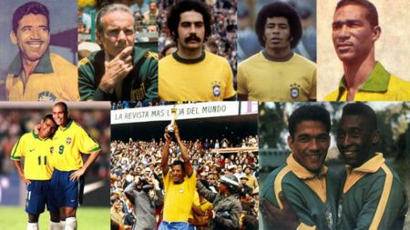

Brasil
A Seleção Brasileira é a única seleção que participou de todas as edições da Copa do Mundo de Futebol. São cinco títulos mundiais (1958, 1962, 1970, 1994 e 2002), dois vice-campeonatos (1950 e 1998), dois terceiros lugares (1938 e 1978) e dois quartos lugares (1974 e 2014) em 20 participações.
A Copa do Mundo de 2018 foi a 21ª participação do Brasil em Mundiais de Futebol.
Seleção atual
.jpg)
Nessa Fifa Word Cup o Brasil vem com um elenco muito valioso e que possui grande qualidade técnica e com muita juventude entre os convocados , alguns jogadores que vão participar de sua primeira copa do mundo são eles : Bremer , Bruno Guimarães , Lucas Paquetá , Vinícius Júnior, Antony , Rodrygo , Raphinha , Richarlison ,Pedro e Gabriel Martinelli.
Porém, o técnico Tite também levou certos jogadores com muita bagagem para competição como o lateral direito Daniel Alves , o volante Casemiro e o principal jogador dessa seleção que é o Neymar .
Pricipais jogadores atualmente
.jpg)
Hoje na seleção do Brasil temos muitos jogadores de alto nível , no setor de defesa temos nomes como Alisson , Thiago Silva e Marquinhos já no setor de meio campo a seleção tem a disposição Bruno Guimarães , Casemiro e Lucas Paquetá , e no setor mais valioso desse elenco temos Neymar , Vinicius Júnior , Antony , Rodrygo , Raphinha e Richarlison .
Hexa
.jpg)
Esse ano o Brasil vai atrás do seu sexto título de copa , o tão sonhado hexacampeonato. Depois da última frustração em 2018 o elenco passou por uma espécie de reformulação e conta com muitos craques para essa edição , desde 2002 o Brasil não sabe o que é levantar a taça de campeão do mundo , e naquela ocasião contava com muitas lendas como Ronaldo Fenômeno , Rivaldo e Ronaldinho Gaúcho fora os outros grandes jogadores .